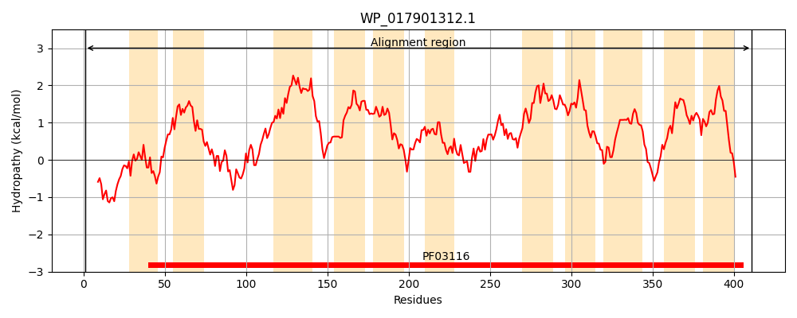
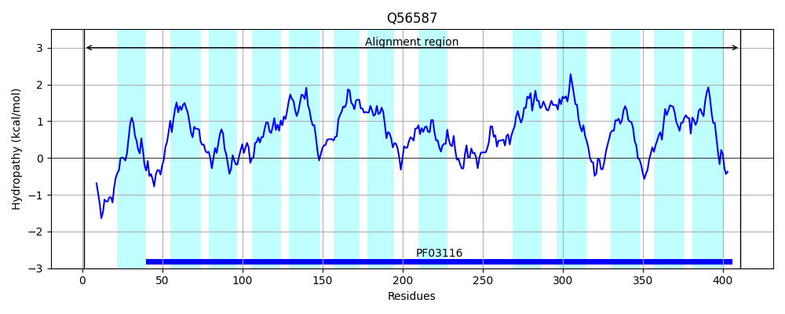
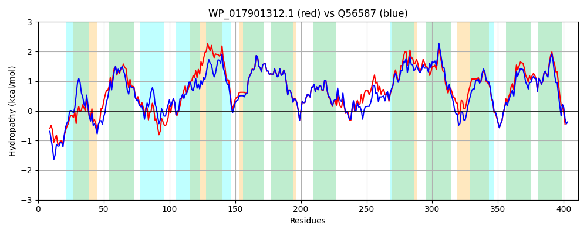

Hit Accession: Q56587
Hit TCID: 3.D.5.1.1
Hit Description: gnl|BL_ORD_ID|14141 gnl|TC-DB|Q56587|3.D.5.1.1 Na(+)-translocating NADH-quinone reductase subunit B (EC 1.6.5.-) (Na(+)-translocating NQR subunit B) (Na(+)-NQR subunit B) (NQR complex subunit B) (NQR-1 subunit B) - Vibrio alginolyticus.
Mach Len: 411
e:0.000000
Query TMS Count : 11
Hit TMS Count: 13
TMS-Overlap Score: 10.050000
Predicted Substrates:CHEBI:9175;sodium(1+)
BLAST Alignment:
Score: 1702 , Bit scores: 660 bits, E-value: 0.0e+00, Alignment length: 411, Percentage identity: 76
Query: 1 MGLKHLIEKLEPHFTHGGKLEKYYPLYEAAATIFYTPGQVTRGAAHVRDAIDLKRMMILVWFAVFPAMFWGMYNVGLQTIPALHKLYGAEQLQQVIANNWHYSVAQWLGVSFSADAGWLSMMTLGAVFFLPIYITVFIVGGFWEVLFAIVRKHEINEGFFVTSILFALIVPPTLPLWQAALGISFGVVIAKEIFGGTGRNFLNPALAGRAFLFFAYPAQISGDLVWTAADGFSGATPLSQWASGGGEALVNVATGIPVSWMDAFLGNIPGSIGEVSTLMILIGGAIILFGRVASWRIVAGVMIGMIATATLFNVIGSDTNPMFAMPWYWHLVLGGFAFGMMFMATDPVSASFTDKGKWSYGVLIGVMCVLIRVVNPAYPEGMMLAILFANLFAPLFDYLVVQANIKRRKSR 411
M LK +E +E HF GGK EK++ LYEA AT+FYTPG VT ++HVRD++DLKR+MI+VWFAVFPAMFWGMYN G Q I AL+ +Y +QL VI+ NWHY + + LG + +ADAG S M LGA +FLPIY TVF+VGGFWEVLF +VRKHE+NEGFFVTSILFALIVPPTLPLWQAALGI+FGVV+AKEIFGGTGRNFLNPALAGRAFLFFAYPAQISGD+VWTAADGFSGAT LSQWA GG ALVN TG P++WMDAF+GNIPGSIGEVSTL ++IG A+I++ R+ASWRI+AGVMIGMIA +TLFNVIGSDTNPMF MPW+WHLVLGGFAFGM FMATDPVSASFT+KGKW YG+LIG MCV+IRVVNPAYPEGMMLAILFANLFAPLFD++V++ NIKRR +R
Sbjct: 1 MALKKFLEDIEHHFEPGGKHEKWFALYEAVATVFYTPGIVTNKSSHVRDSVDLKRIMIMVWFAVFPAMFWGMYNAGGQAIAALNHMYAGDQLATVISGNWHYWLTEMLGGTIAADAGVGSKMLLGATYFLPIYATVFLVGGFWEVLFCMVRKHEVNEGFFVTSILFALIVPPTLPLWQAALGITFGVVVAKEIFGGTGRNFLNPALAGRAFLFFAYPAQISGDVVWTAADGFSGATALSQWAQGGNGALVNTVTGSPITWMDAFIGNIPGSIGEVSTLALMIGAAMIVYMRIASWRIIAGVMIGMIAVSTLFNVIGSDTNPMFNMPWHWHLVLGGFAFGMFFMATDPVSASFTNKGKWWYGILIGAMCVMIRVVNPAYPEGMMLAILFANLFAPLFDHVVIEKNIKRRLAR 411 | Protein Hydropathy Plots: |
|---|
|  |  |
Pairwise Alignment-Hydropathy Plot:
|
|---|
|  |